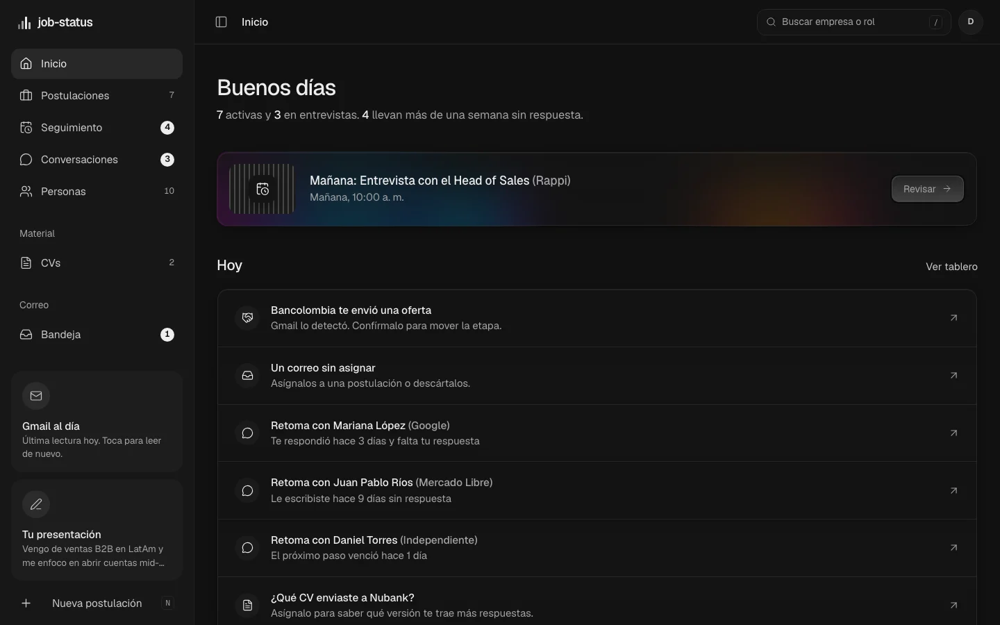
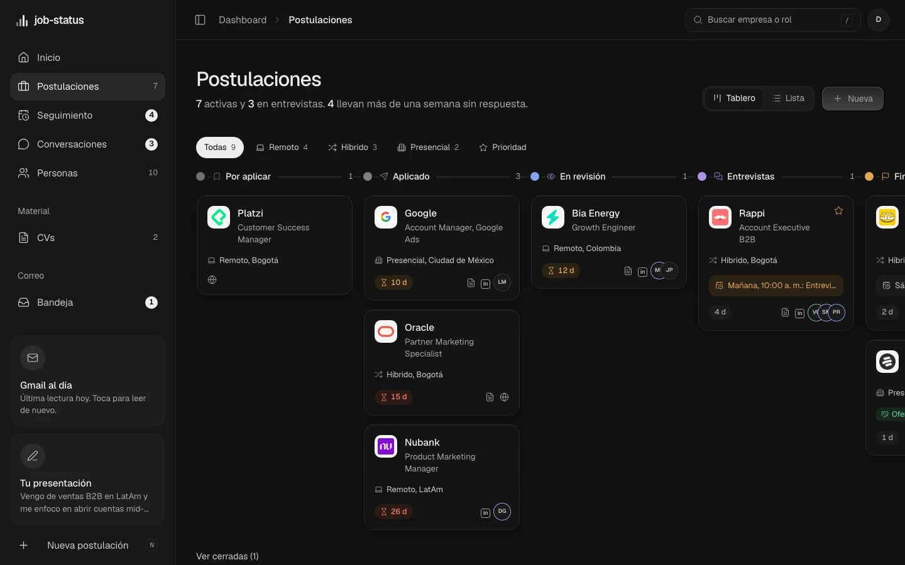
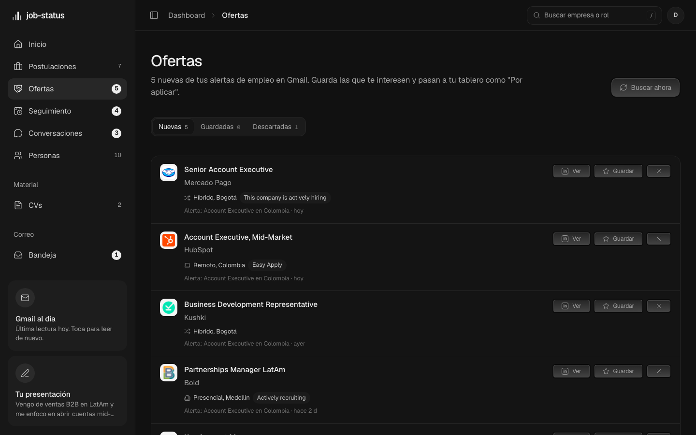
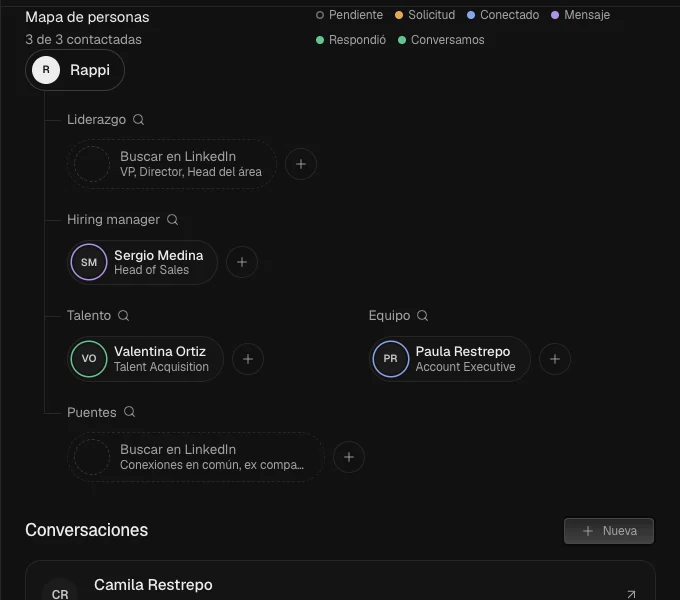
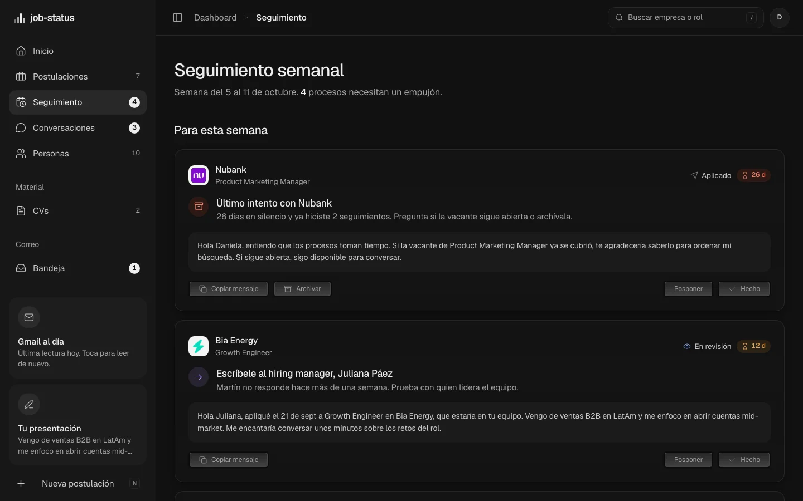

<!doctype html>
<html lang="es">
<head>
<meta charset="utf-8" />
<title>job-status · launch</title>
<style>
  @font-face { font-family: Geist; src: url(node_modules/geist/dist/fonts/geist-sans/Geist-Regular.woff2) format("woff2"); font-weight: 400; }
  @font-face { font-family: Geist; src: url(node_modules/geist/dist/fonts/geist-sans/Geist-Medium.woff2) format("woff2"); font-weight: 500; }
  @font-face { font-family: Geist; src: url(node_modules/geist/dist/fonts/geist-sans/Geist-SemiBold.woff2) format("woff2"); font-weight: 600; }
  @font-face { font-family: GeistMono; src: url(node_modules/geist/dist/fonts/geist-mono/GeistMono-Regular.woff2) format("woff2"); font-weight: 400; }
  * { box-sizing: border-box; margin: 0; }
  html, body { width: 1920px; height: 1080px; overflow: hidden; background: #0b0b0b; color: #ededed; font-family: Geist, sans-serif; -webkit-font-smoothing: antialiased; }
  #bg { position: absolute; inset: 0; width: 1920px; height: 1080px; }
  #stage { position: absolute; inset: 0; perspective: 2200px; }
  .abs { position: absolute; will-change: transform, opacity, filter; }
  .center { left: 50%; top: 50%; }

  /* Marca */
  .brand { display: flex; align-items: flex-end; gap: 22px; }
  .bars { display: flex; align-items: flex-end; gap: 9px; height: 96px; }
  .bars i { display: block; width: 15px; border-radius: 3px; background: #ededed; }
  .word { font-size: 104px; font-weight: 600; letter-spacing: -0.05em; line-height: 0.9; display: flex; }
  .word span { display: inline-block; }

  .headline { font-size: 116px; font-weight: 600; letter-spacing: -0.05em; line-height: 1.02; text-align: center; white-space: nowrap; }
  .headline .w { display: inline-block; margin: 0 0.12em; }
  .muted { color: #8a8a8a; }

  .caption { font-size: 64px; font-weight: 600; letter-spacing: -0.045em; line-height: 1.04; }
  .caption .w { display: inline-block; margin-right: 0.22em; }
  .kicker { font-family: GeistMono, monospace; font-size: 22px; letter-spacing: 0.18em; text-transform: uppercase; color: #8a8a8a; margin-bottom: 26px; }

  .chip { display: flex; align-items: center; gap: 16px; padding: 18px 26px; border-radius: 22px; background: rgba(28, 28, 28, 0.86); border: 1px solid #2c2c2c; box-shadow: 0 30px 60px rgba(0, 0, 0, 0.45); font-size: 30px; white-space: nowrap; }
  .chip b { font-weight: 500; }
  .chip small { font-family: GeistMono, monospace; font-size: 20px; color: #8a8a8a; }
  .chip .dot { width: 14px; height: 14px; border-radius: 50%; background: #ededed; }

  .window { width: 1300px; border-radius: 22px; overflow: hidden; background: #111; border: 1px solid #2a2a2a; box-shadow: 0 60px 140px rgba(0, 0, 0, 0.7), 0 0 0 1px rgba(255, 255, 255, 0.03); transform-style: preserve-3d; }
  .chrome { height: 46px; display: flex; align-items: center; gap: 9px; padding: 0 18px; background: #171717; border-bottom: 1px solid #262626; }
  .chrome i { width: 12px; height: 12px; border-radius: 50%; background: #3a3a3a; }
  .chrome .url { margin-left: 18px; flex: 1; height: 28px; border-radius: 8px; background: #0f0f0f; color: #8a8a8a; font-family: GeistMono, monospace; font-size: 15px; display: flex; align-items: center; justify-content: center; }
  .screen { position: relative; width: 1300px; height: 812px; overflow: hidden; }
  .screen img { position: absolute; inset: 0; width: 100%; height: auto; }

  .card { border-radius: 22px; overflow: hidden; border: 1px solid #2a2a2a; box-shadow: 0 50px 120px rgba(0, 0, 0, 0.7); background: #111; }
  .card img { display: block; width: 100%; height: auto; }

  .dotm { width: 1180px; height: 440px; border-radius: 30px; background: #1d1d1d; overflow: hidden; border: 1px solid #2a2a2a; }
  .dotm canvas { width: 100%; height: 100%; display: block; }
  .pill { position: absolute; padding: 10px 20px; border-radius: 999px; background: #121212; color: #c4c4c4; font-family: GeistMono, monospace; font-size: 22px; letter-spacing: 0.02em; }

  .badge { display: inline-flex; align-items: center; gap: 12px; padding: 12px 22px; border-radius: 999px; border: 1px solid #2f2f2f; background: rgba(20, 20, 20, 0.8); font-size: 26px; color: #cfcfcf; }
  .badge i { width: 11px; height: 11px; border-radius: 50%; background: #34d399; box-shadow: 0 0 0 5px rgba(52, 211, 153, 0.18); }
  .byline { font-size: 34px; font-weight: 400; color: #9a9a9a; letter-spacing: -0.01em; white-space: nowrap; }
  .byline b { color: #ededed; font-weight: 500; }
  .url-big { font-family: GeistMono, monospace; font-size: 30px; color: #9a9a9a; letter-spacing: 0.01em; }
</style>
</head>
<body>
<canvas id="bg" width="1920" height="1080"></canvas>
<div id="stage"></div>

<script>
  // Tiempo virtual: el render controla el reloj para que cada cuadro sea exacto (Shaders lee performance.now y rAF).
  window.process = { env: { NODE_ENV: "production" } };
  let __vt = 0;
  const __q = [];
  performance.now = () => __vt;
  window.requestAnimationFrame = (cb) => (__q.push(cb), __q.length);
  window.cancelAnimationFrame = () => {};
  window.__flushRAF = () => { const cbs = __q.splice(0); cbs.forEach((cb) => cb(__vt)); };
</script>

<script type="module">
import { createShader } from "./node_modules/shaders/dist/js/index.js";

const FPS = 30, DURATION = 20;
const $ = (html) => { const t = document.createElement("template"); t.innerHTML = html.trim(); return t.content.firstChild; };
const stage = document.getElementById("stage");
const add = (html) => { const el = $(html); stage.appendChild(el); return el; };

/* ---------- utilidades de animación ---------- */
const clamp = (v, a = 0, b = 1) => Math.min(b, Math.max(a, v));
const seg = (t, a, b) => clamp((t - a) / (b - a));
const outExpo = (x) => (x >= 1 ? 1 : 1 - Math.pow(2, -10 * x));
const outCubic = (x) => 1 - Math.pow(1 - x, 3);
const inOutCubic = (x) => (x < 0.5 ? 4 * x * x * x : 1 - Math.pow(-2 * x + 2, 3) / 2);
const inCubic = (x) => x * x * x;
const lerp = (a, b, x) => a + (b - a) * x;
/** Entrada con desenfoque que sube (como TextReveal) y salida que se va hacia arriba. */
function reveal(el, t, tin, tout, { dy = 40, blur = 14, dur = 0.7, outDur = 0.4, base = "" } = {}) {
  const i = outExpo(seg(t, tin, tin + dur));
  const o = tout == null ? 0 : inCubic(seg(t, tout, tout + outDur));
  const y = lerp(dy, 0, i) - o * dy;
  el.style.opacity = String(i * (1 - o));
  el.style.filter = `blur(${(1 - i) * blur + o * blur}px)`;
  el.style.transform = `${base} translateY(${y}px)`;
}
const words = (text, cls = "w") => text.split(" ").map((w) => `<span class="${cls}">${w}</span>`).join(" ");

/* ---------- escena 1: marca y titular ---------- */
const brand = add(`<div class="abs center brand"><div class="bars"><i></i><i></i><i></i><i></i></div><div class="word">${[..."job-status"].map((c) => `<span>${c}</span>`).join("")}</div></div>`);
const by1 = add(`<div class="abs center byline">by <b>Andrés Corrales</b></div>`);
const bars = [...brand.querySelectorAll(".bars i")];
const letters = [...brand.querySelectorAll(".word span")];
const BAR_H = [38, 62, 96, 74];
const head = add(`<div class="abs center headline">${words("Tu búsqueda laboral,")}<br>${words("en un solo lugar.").replace("lugar.", '<span class="muted">lugar.</span>')}</div>`);
const headWords = [...head.querySelectorAll(".w")];

/* ---------- escena 2: isométrica, todo converge en job-status ---------- */
const iso = add(`<svg class="abs" id="iso" width="1920" height="1080" viewBox="0 0 1920 1080" style="left:0;top:0;overflow:visible"></svg>`);
const cap2 = add(`<div class="abs" style="left:50%;top:64px;text-align:center;transform:translateX(-50%)"><div class="kicker">Cómo funciona</div><div class="caption" style="font-size:60px;white-space:nowrap">${words("Gmail, LinkedIn y tus CVs, en un solo tablero.")}</div></div>`);
/* ---------- escena 3: el producto ---------- */
const win = add(`<div class="abs window" style="left:520px;top:150px"><div class="chrome"><i></i><i></i><i></i><div class="url">job-status-rosy.vercel.app/dashboard</div></div><div class="screen"></div></div>`);
const s1 = win.querySelector("#s1"), s2 = win.querySelector("#s2");
const cap3a = add(`<div class="abs" style="left:110px;top:330px;width:420px"><div class="kicker">Postulaciones</div><div class="caption">${words("Cada proceso, en su etapa.")}</div></div>`);
const cap3b = add(`<div class="abs" style="left:110px;top:330px;width:420px"><div class="kicker">Tablero</div><div class="caption">${words("Y cuántos días lleva sin respuesta.")}</div></div>`);

/* ---------- escena 4: ofertas desde Gmail ---------- */
const dotm = add(`<div class="abs center dotm"><canvas width="1180" height="440"></canvas><span class="pill" style="top:22px;right:22px" id="dlabel">Leyendo alertas de empleo</span><span class="pill" style="bottom:22px;left:22px" id="dpct">0%</span></div>`);
const dctx = dotm.querySelector("canvas").getContext("2d");
const dpct = dotm.querySelector("#dpct"), dlabel = dotm.querySelector("#dlabel");
const cap4 = add(`<div class="abs center caption" style="text-align:center;white-space:nowrap">${words("Tus alertas de empleo de Gmail,")}</div>`);
const cap4b = add(`<div class="abs center caption" style="text-align:center;white-space:nowrap">${words("convertidas en ofertas.")}</div>`);
const offers = add(`<div class="abs window" style="left:310px;top:240px"><div class="chrome"><i></i><i></i><i></i><div class="url">job-status-rosy.vercel.app/dashboard/ofertas</div></div><div class="screen"></div></div>`);

/* ---------- escena 5: personas y seguimiento ---------- */
const map = add(`<div class="abs card" style="left:150px;top:250px;width:760px"></div>`);
const follow = add(`<div class="abs card" style="left:960px;top:200px;width:820px;height:680px"></div>`);
const cap5 = add(`<div class="abs" style="left:150px;top:96px;white-space:nowrap"><div class="caption" style="font-size:58px">${words("Sabe a quién escribirle. Y cuándo.")}</div></div>`);

/* ---------- escena 6: cierre ---------- */
const end = add(`<div class="abs center" style="display:flex;flex-direction:column;align-items:center;gap:40px"><div class="brand" id="ebrand"><div class="bars"><i></i><i></i><i></i><i></i></div><div class="word">job-status</div></div><div class="caption" id="etag" style="font-size:54px;color:#cfcfcf">Tu búsqueda laboral, ordenada.</div><div style="display:flex;gap:22px;align-items:center" id="emeta"><span class="badge"><i></i>Gratis durante la beta</span><span class="url-big">job-status-rosy.vercel.app</span></div><div class="byline" id="eby">by <b>Andrés Corrales</b></div></div>`);
const ebars = [...end.querySelectorAll(".bars i")];
const ebrand = end.querySelector("#ebrand"), etag = end.querySelector("#etag"), emeta = end.querySelector("#emeta"), eby = end.querySelector("#eby");

/* ---------- fondo con Shaders ---------- */
const shader = await createShader(document.getElementById("bg"), {
  components: [
    { id: "grad", type: "FlowingGradient", props: { colorA: "#0a0a0a", colorB: "#151516", colorC: "#1f2022", colorD: "#0c0c0d", speed: 0.5, distortion: 0.7 } },
    { id: "dots", type: "DotGrid", props: { color: "#ffffff", density: 64, dotSize: 0.1, twinkle: 0.7, speed: 0.5 } },
    { id: "vig", type: "Vignette", props: { color: "#000000", intensity: 0.75, radius: 0.75 } },
    { id: "grain", type: "FilmGrain", props: { strength: 0.07 } },
  ],
});

/* ---------- matriz de puntos de la extracción (igual que en la app) ---------- */
function drawDots(t) {
  const w = 1180, h = 440, GAP = 22;
  dctx.clearRect(0, 0, w, h);
  const blob = (p) => ({ x: w * (0.5 + 0.4 * Math.cos(t * 0.9 + p)), y: h * (0.5 + 0.36 * Math.sin(t * 1.2 + p * 1.3)) });
  const a = blob(3.6), b = blob(0.5), r2 = (h * 0.42) ** 2;
  for (let x = GAP / 2; x < w; x += GAP) for (let y = GAP / 2; y < h; y += GAP) {
    const v = Math.min(1, Math.exp(-((x - a.x) ** 2 + (y - a.y) ** 2) / r2) + Math.exp(-((x - b.x) ** 2 + (y - b.y) ** 2) / r2));
    dctx.globalAlpha = 0.14 + v * 0.86;
    dctx.fillStyle = "#fff";
    dctx.beginPath();
    dctx.arc(x, y, 1.4 + v * 3.6, 0, Math.PI * 2);
    dctx.fill();
  }
  dctx.globalAlpha = 1;
}

/* ---------- motor isométrico (SVG) ---------- */
const NS = "http://www.w3.org/2000/svg";
const C30 = Math.cos(Math.PI / 6), S30 = 0.5;
const OX = 960, OY = 700;
const P = (x, y, z = 0) => [OX + (x - y) * C30, OY + (x + y) * S30 - z];
const pts = (arr) => arr.map((p) => p.join(",")).join(" ");
const el = (tag, attrs, parent) => { const e = document.createElementNS(NS, tag); for (const k in attrs) e.setAttribute(k, attrs[k]); (parent ?? iso).appendChild(e); return e; };
/** Caja isométrica: cara superior y las dos laterales visibles. */
function box(g, x, y, z, w, d, h, { top = "#1d1d1d", right = "#121212", front = "#171717", stroke = "#3a3a3a" } = {}) {
  el("polygon", { points: pts([P(x + w, y, z), P(x + w, y + d, z), P(x + w, y + d, z + h), P(x + w, y, z + h)]), fill: right, stroke, "stroke-width": 1.2, "stroke-linejoin": "round" }, g);
  el("polygon", { points: pts([P(x, y + d, z), P(x + w, y + d, z), P(x + w, y + d, z + h), P(x, y + d, z + h)]), fill: front, stroke, "stroke-width": 1.2, "stroke-linejoin": "round" }, g);
  el("polygon", { points: pts([P(x, y, z + h), P(x + w, y, z + h), P(x + w, y + d, z + h), P(x, y + d, z + h)]), fill: top, stroke, "stroke-width": 1.2, "stroke-linejoin": "round" }, g);
}
/** Grupo dibujado sobre la cara superior (plano x-y a la altura z): se dibuja en 2D y se proyecta. */
function topPlane(g, x, y, z) { const [ex, ey] = P(x, y, z); return el("g", { transform: `matrix(${C30},${S30},${-C30},${S30},${ex},${ey})` }, g); }
/** Grupo sobre un plano vertical frente al espectador (plano x-z en y): u va por x, v hacia abajo. */
function frontPlane(g, x, y, zTop) { const [ex, ey] = P(x, y, zTop); return el("g", { transform: `matrix(${C30},${S30},0,1,${ex},${ey})` }, g); }

// Cuadrícula del piso, que se desvanece hacia los bordes.
const defs = el("defs", {});
defs.innerHTML = `<radialGradient id="fade" cx="50%" cy="58%" r="55%"><stop offset="0" stop-color="#fff" stop-opacity="1"/><stop offset="1" stop-color="#fff" stop-opacity="0"/></radialGradient><mask id="gridmask"><rect width="1920" height="1080" fill="url(#fade)"/></mask><filter id="glow" x="-50%" y="-50%" width="200%" height="200%"><feGaussianBlur stdDeviation="6"/></filter>`;
const grid = el("g", { mask: "url(#gridmask)", opacity: 0 });
for (let i = -720; i <= 720; i += 90) {
  el("line", { x1: P(i, -720)[0], y1: P(i, -720)[1], x2: P(i, 720)[0], y2: P(i, 720)[1], stroke: "rgba(255,255,255,0.07)", "stroke-width": 1 }, grid);
  el("line", { x1: P(-720, i)[0], y1: P(-720, i)[1], x2: P(720, i)[0], y2: P(720, i)[1], stroke: "rgba(255,255,255,0.07)", "stroke-width": 1 }, grid);
}

// Líneas punteadas y paquetes de datos (debajo de las piezas).
const TILES = [
  { key: "in", x: -400, y: -60, label: "LinkedIn" },
  { key: "mail", x: 30, y: -420, label: "Gmail" },
  { key: "cv", x: -110, y: 300, label: "CV" },
  { key: "cal", x: 300, y: 20, label: "Calendario" },
];
const T = 120, TH = 20;
const links = TILES.map((tl) => {
  const a = P(tl.x + T / 2, tl.y + T / 2, TH);
  const cx = clamp(tl.x + T / 2, -160, 160), cy = clamp(tl.y + T / 2, -160, 160);
  const b = P(cx, cy, 28);
  const line = el("line", { x1: a[0], y1: a[1], x2: a[0], y2: a[1], stroke: "#7a7a7a", "stroke-width": 2.5, "stroke-dasharray": "10 10", "stroke-linecap": "round" });
  const halo = el("circle", { r: 14, fill: "#34d399", opacity: 0, filter: "url(#glow)" });
  const dot = el("circle", { r: 6, fill: "#ffffff", opacity: 0 });
  return { a, b, line, halo, dot };
});

// Base central con la pantalla de job-status.
const center = el("g", {});
box(center, -170, -170, 0, 340, 340, 26, { top: "#1b1b1b" });
box(center, -125, -125, 26, 250, 250, 10, { top: "#222222" });
const screenG = el("g", {}, center);
box(screenG, -110, -60, 36, 220, 14, 250, { top: "#2a2a2a", right: "#0f0f0f", front: "#0d0d0d", stroke: "#4a4a4a" });
const ui = frontPlane(screenG, -100, -46, 276);
ui.innerHTML = `
  <rect x="0" y="0" width="200" height="230" rx="10" fill="#111111"/>
  <g transform="translate(16,18)"><rect x="0" y="10" width="4" height="8" rx="1" fill="#ededed"/><rect x="6" y="6" width="4" height="12" rx="1" fill="#ededed"/><rect x="12" y="0" width="4" height="18" rx="1" fill="#ededed"/><rect x="18" y="4" width="4" height="14" rx="1" fill="#ededed"/>
  <text x="30" y="16" font-family="Geist" font-weight="600" font-size="17" fill="#ededed" letter-spacing="-0.4">job-status</text></g>
  ${[0, 1, 2, 3].map((i) => `<g class="row" transform="translate(16,${62 + i * 40})">
    <circle cx="10" cy="10" r="9" fill="none" stroke="#4a4a4a" stroke-width="2" class="ring"/>
    <circle cx="10" cy="10" r="9" fill="#34d399" class="fill" opacity="0"/>
    <path d="M6 10.5l3 3 5.5-6" fill="none" stroke="#06281b" stroke-width="2.4" stroke-linecap="round" stroke-linejoin="round" class="tick" opacity="0"/>
    <rect x="28" y="4" width="0" height="7" rx="3.5" fill="#ededed" class="bar"/>
    <rect x="28" y="15" width="70" height="5" rx="2.5" fill="#3a3a3a"/>
  </g>`).join("")}`;
const rows = [...ui.querySelectorAll(".row")];

// Piezas satélite con su ícono en la cara superior.
const tileEls = TILES.map((tl) => {
  const g = el("g", {});
  box(g, tl.x, tl.y, 0, T, T, TH);
  const face = topPlane(g, tl.x, tl.y, TH);
  const icon = {
    in: `<rect x="34" y="34" width="52" height="52" rx="12" fill="#ededed"/><text x="60" y="73" text-anchor="middle" font-family="Geist" font-weight="600" font-size="34" fill="#111">in</text>`,
    mail: `<rect x="28" y="38" width="64" height="46" rx="7" fill="none" stroke="#ededed" stroke-width="5"/><path d="M30 42l30 22 30-22" fill="none" stroke="#ededed" stroke-width="5" stroke-linejoin="round"/>`,
    cv: `<rect x="36" y="26" width="48" height="66" rx="7" fill="none" stroke="#ededed" stroke-width="5"/><rect x="46" y="42" width="28" height="5" rx="2" fill="#ededed"/><rect x="46" y="54" width="28" height="5" rx="2" fill="#ededed"/><rect x="46" y="66" width="18" height="5" rx="2" fill="#ededed"/>`,
    cal: `<rect x="28" y="32" width="64" height="58" rx="8" fill="none" stroke="#ededed" stroke-width="5"/><rect x="28" y="32" width="64" height="14" rx="6" fill="#ededed"/><circle cx="46" cy="64" r="5" fill="#ededed"/><circle cx="60" cy="64" r="5" fill="#ededed"/><circle cx="74" cy="64" r="5" fill="#34d399"/><circle cx="46" cy="78" r="5" fill="#ededed"/>`,
  }[tl.key];
  face.innerHTML = `<rect x="10" y="10" width="100" height="100" rx="10" fill="none" stroke="#2c2c2c" stroke-width="2"/>${icon}`;
  const [lx, ly] = P(tl.x + T, tl.y + T / 2, 0);
  const label = el("text", { x: lx + 18, y: ly + 18, "font-family": "GeistMono", "font-size": 18, fill: "#8a8a8a", "letter-spacing": 1 }, g);
  label.textContent = tl.label.toUpperCase();
  return g;
});
// La base va encima de las líneas y debajo de nada: se reordena al final.
iso.appendChild(center);

function renderIso(t) {
  const s = t - 3.4;
  const out = inCubic(seg(t, 7.05, 7.5));
  iso.style.opacity = String(1 - out);
  iso.style.filter = `blur(${out * 12}px)`;
  iso.style.transform = `scale(${1.25 * (1 - out * 0.05)})`;
  iso.style.transformOrigin = "960px 680px";
  grid.setAttribute("opacity", String(outCubic(seg(s, 0, 0.8))));
  const ci = outExpo(seg(s, 0.05, 0.9));
  center.setAttribute("transform", `translate(0,${(1 - ci) * 80})`);
  center.setAttribute("opacity", String(ci));
  const si = outExpo(seg(s, 0.35, 1.15));
  screenG.setAttribute("transform", `translate(0,${(1 - si) * 60})`);
  screenG.setAttribute("opacity", String(si));
  tileEls.forEach((g, i) => {
    const x = outExpo(seg(s, 0.45 + i * 0.12, 1.2 + i * 0.12));
    g.setAttribute("transform", `translate(0,${-(1 - x) * 70})`);
    g.setAttribute("opacity", String(x));
  });
  links.forEach((L, i) => {
    const d = inOutCubic(seg(s, 1.0 + i * 0.1, 1.6 + i * 0.1));
    L.line.setAttribute("x2", lerp(L.a[0], L.b[0], d));
    L.line.setAttribute("y2", lerp(L.a[1], L.b[1], d));
    L.line.setAttribute("stroke-dashoffset", String(-s * 40));
    // Paquete: sale de la pieza y llega a la base.
    const k = seg(s, 1.55 + i * 0.32, 2.15 + i * 0.32);
    const e = inOutCubic(k);
    const vis = k > 0 && k < 1 ? 1 : 0;
    const px = lerp(L.a[0], L.b[0], e), py = lerp(L.a[1], L.b[1], e);
    L.dot.setAttribute("cx", px); L.dot.setAttribute("cy", py); L.dot.setAttribute("opacity", vis);
    L.halo.setAttribute("cx", px); L.halo.setAttribute("cy", py); L.halo.setAttribute("opacity", vis * 0.9);
    // Al llegar, se marca la fila correspondiente en la pantalla.
    const done = outExpo(seg(s, 2.15 + i * 0.32, 2.55 + i * 0.32));
    const r = rows[i];
    if (r) {
      r.querySelector(".fill").setAttribute("opacity", done);
      r.querySelector(".tick").setAttribute("opacity", done);
      r.querySelector(".ring").setAttribute("opacity", 1 - done);
      r.querySelector(".bar").setAttribute("width", 40 + done * 90);
    }
  });
  reveal(cap2, t, 3.6, 7.0, { dy: 30, base: "translateX(-50%)", outDur: 0.4 });
}

/* ---------- línea de tiempo ---------- */
function render(time) {
  let t = time;
  // 1. Marca: barras que crecen, letras que entran, luego sube y deja el titular.
  const up = inOutCubic(seg(t, 1.75, 2.3));
  const out1 = inCubic(seg(t, 1.75, 2.1));
  bars.forEach((b, i) => { b.style.height = `${BAR_H[i] * outExpo(seg(t, 0.1 + i * 0.08, 0.7 + i * 0.08))}px`; });
  letters.forEach((l, i) => {
    const x = outExpo(seg(t, 0.35 + i * 0.035, 0.95 + i * 0.035));
    l.style.opacity = String(x);
    l.style.filter = `blur(${(1 - x) * 10}px)`;
    l.style.transform = `translateY(${(1 - x) * 30}px)`;
  });
  brand.style.opacity = String(1 - out1);
  brand.style.filter = `blur(${out1 * 12}px)`;
  brand.style.transform = `translate(-50%,-50%) translateY(${-30 - up * 60}px) scale(${1 - up * 0.1})`;
  {
    const x = outExpo(seg(t, 0.75, 1.4));
    by1.style.opacity = String(x * (1 - out1));
    by1.style.filter = `blur(${(1 - x) * 10 + out1 * 12}px)`;
    by1.style.transform = `translate(-50%,-50%) translateY(${70 + (1 - x) * 20 - up * 60}px)`;
  }
  headWords.forEach((w, i) => {
    const x = outExpo(seg(t, 2.0 + i * 0.07, 2.6 + i * 0.07));
    const o = inCubic(seg(t, 3.15, 3.45));
    w.style.opacity = String(x * (1 - o));
    w.style.filter = `blur(${(1 - x) * 16 + o * 14}px)`;
    w.style.transform = `translateY(${(1 - x) * 70 - o * 50}px)`;
  });
  head.style.transform = "translate(-50%,-50%)";

  // 2. Isométrica: Gmail, LinkedIn, CV y calendario convergen en job-status.
  renderIso(t);

  // 3. Producto: la ventana entra inclinada y se endereza; cambia de Inicio al Tablero.
  {
    const t0 = t;
    t = 6.55 + (t0 - 7.3) * (3.9 / 3.3);
    const i = outExpo(seg(t, 6.55, 7.6));
    const o = inCubic(seg(t, 10.0, 10.45));
    const zoom = lerp(1, 1.04, seg(t, 6.6, 10.4));
    win.style.opacity = String(Math.min(1, i * 1.4) * (1 - o));
    win.style.filter = `blur(${(1 - i) * 8 + o * 10}px)`;
    win.style.transform = `translateY(${lerp(260, 0, i) - o * 120}px) rotateX(${lerp(24, 4, i)}deg) rotateY(${lerp(-10, -4, i)}deg) scale(${zoom})`;
    const sw = inOutCubic(seg(t, 8.35, 8.85));
    s2.style.opacity = String(sw);
    s1.style.transform = `translateY(${-sw * 20}px)`;
    s2.style.transform = `translateY(${(1 - sw) * 20}px)`;
    reveal(cap3a, t, 6.95, 8.2, { outDur: 0.3 });
    reveal(cap3b, t, 8.55, 9.95, { outDur: 0.35 });
    t = t0;
  }

  // 4. Ofertas: la matriz de puntos lee Gmail y aparece la lista de ofertas.
  {
    const t0 = t;
    t = 10.35 + (t0 - 10.55) * (3.65 / 3.45);
    const i = outExpo(seg(t, 10.35, 11.0));
    const o = inOutCubic(seg(t, 12.15, 12.55));
    dotm.style.opacity = String(i * (1 - o));
    dotm.style.filter = `blur(${(1 - i) * 10 + o * 8}px)`;
    dotm.style.transform = `translate(-50%,-50%) translateY(${lerp(30, 10, i)}px) scale(${lerp(0.94, 1, i) * (1 - o * 0.08)})`;
    if (t > 10.2 && t < 12.7) drawDots(t);
    const pct = Math.round(100 * outCubic(seg(t, 10.55, 12.0)));
    dpct.textContent = `${pct}%`;
    dlabel.textContent = pct >= 100 ? "26 ofertas nuevas" : pct > 55 ? "Ordenando ofertas" : "Leyendo alertas de empleo";
    reveal(cap4, t, 10.45, 12.1, { dy: 30, base: "translate(-50%,-50%) translateY(-320px)", outDur: 0.3 });
    reveal(cap4b, t, 12.35, 13.55, { dy: 30, base: "translate(-50%,-50%) translateY(-400px)", outDur: 0.35 });
    const oi = outExpo(seg(t, 12.3, 13.2));
    const oo = inCubic(seg(t, 13.6, 14.0));
    offers.style.opacity = String(oi * (1 - oo));
    offers.style.filter = `blur(${(1 - oi) * 8 + oo * 10}px)`;
    offers.style.transform = `translateY(${lerp(320, 70, oi) - oo * 100}px) rotateX(${lerp(20, 6, oi)}deg) scale(${lerp(0.94, 1, oi)})`;
    t = t0;
  }

  // 5. Personas y seguimiento: dos tarjetas que entran escalonadas.
  {
    const a = outExpo(seg(t, 14.0, 14.9)), b = outExpo(seg(t, 14.25, 15.15));
    const o = inCubic(seg(t, 16.55, 17.0));
    const fl = Math.sin(t * 1.4) * 6;
    map.style.opacity = String(a * (1 - o));
    map.style.filter = `blur(${(1 - a) * 8 + o * 10}px)`;
    map.style.transform = `translate(${lerp(-120, 0, a)}px, ${fl - o * 80}px) rotate(${lerp(-4, -1.5, a)}deg)`;
    follow.style.opacity = String(b * (1 - o));
    follow.style.filter = `blur(${(1 - b) * 8 + o * 10}px)`;
    follow.style.transform = `translate(${lerp(140, 0, b)}px, ${-fl - o * 80}px) rotate(${lerp(4, 1.5, b)}deg)`;
    reveal(cap5, t, 14.3, 16.5, { dy: 30, outDur: 0.4 });
  }

  // 6. Cierre: la marca, la frase y el enlace; los rayos de luz suben.
  {
    end.style.transform = "translate(-50%,-50%)";
    ebars.forEach((b, i) => { b.style.height = `${BAR_H[i] * outExpo(seg(t, 17.05 + i * 0.08, 17.7 + i * 0.08))}px`; });
    reveal(ebrand, t, 17.1, null, { dy: 30, dur: 0.8 });
    reveal(etag, t, 17.65, null, { dy: 24, dur: 0.8 });
    reveal(emeta, t, 18.15, null, { dy: 20, dur: 0.8 });
    reveal(eby, t, 18.6, null, { dy: 16, dur: 0.8 });
  }
  // En el cierre la trama de puntos brilla un poco más.
  shader.update("dots", { twinkle: 0.7 + 0.3 * inOutCubic(seg(t, 16.8, 18.6)), dotSize: 0.1 + 0.05 * inOutCubic(seg(t, 16.8, 18.6)) });
}

/** Lo llama el script de render: avanza el reloj virtual hasta el cuadro n y dibuja. */
window.__frame = async (n) => {
  const t = n / FPS;
  __vt = t * 1000;
  render(t);
  window.__flushRAF();
  await new Promise((r) => setTimeout(r, 0));
};
await document.fonts.ready;
await Promise.all([...document.images].map((i) => (i.complete ? 1 : new Promise((r) => (i.onload = i.onerror = r)))));
window.__ready = true;
</script>
</body>
</html>
